「いつか治したい」「時間があれば矯正したい」
そんな想いを抱えているのに
なかなか踏み出せない人がたくさんいらっしゃいます。
矯正後の効果や見た目が心配…
でも矯正しないと将来が不安…
そのような葛藤から一歩踏み出す勇気を
私たちが支えたいと思っています。
歯の相談やお悩みをお話に来られるだけでも構いません。
患者様の明るい未来のために
まずは一歩踏み出す勇気をお手伝いさせてください。
インターネットからのご予約はこちら
24時間予約受付
ご相談はこちらから
お気軽にどうぞ
検討中の方
必見！
なぜ矯正治療が必要なのか
ご理解いただけていますか？
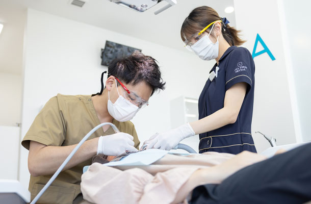
口元は人の印象を大きく左右するパーツ。歯並びが綺麗に整っていると、笑顔が映える口元になり印象がグッとよく見えます。矯正治療では歯並びを整えることで見た目の印象を大きく変えることができ、口元がコンプレックスだという方でも笑顔に自信が持てるようになるでしょう。ただし矯正治療は口元の見た目を美しくするだけではありません。
- 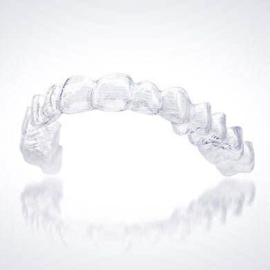
- 歯にはもともと食べ物を細かく噛み砕いて消化しやすくする機能や、明瞭な発音でコミュニケーションを円滑に図る機能、体全体のバランスを保つ機能、噛むことで脳に刺激を与える機能などがあり、治療することでそれらの機能を最大限に引き出すこともできます。
また、歯は一度失ったら二度と取り戻すことができない大切なものです。矯正治療で歯並びを整えることで歯の寿命を延ばすことにもつながります。矯正治療は歯の見た目を美しくするだけでなく様々な効果がありますので、歯並びが気になるという方は矯正治療をどうぞ前向きに検討してみてください。
バラバラの歯並びを
そのままにしておくと
歯にはもともと食べ物を細かく噛み砕いて消化しやすくする機能や、明瞭な発音でコミュニケーションを円滑に図る機能、体全体のバランスを保つ機能、噛むことで脳に刺激を与える機能などがあり、治療することでそれらの機能を最大限に引き出すこともできます。
また、歯は一度失ったら二度と取り戻すことができない大切なものです。矯正治療で歯並びを整えることで歯の寿命を延ばすことにもつながります。矯正治療は歯の見た目を美しくするだけでなく様々な効果がありますので、歯並びが気になるという方は矯正治療をどうぞ前向きに検討してみてください。
顎の成長や顔の形に
悪影響を及ぼす
噛み合わせがズレている状態が長く続くと顎の骨まで変形する可能性があり、顔の骨格が歪んでしまったり、発音に支障をきたしたりすることもあります。
虫歯や歯周病に
かかりやすくなる
歯の2大疾患と言えば、むし歯と歯周病。歯と歯が重なって生えているとその箇所に磨き残しができたり、歯と歯のすき間に食べカスがたまったりしやすくなり、それがむし歯や歯周病の原因となります。
食べ物が
よく噛めません
歯は消化器官の一つです。上下の噛み合わせがズレていてはしっかり食べ物を噛み砕くことができません。十分に咀嚼されていない固形の状態で食べ物を飲み込むことで、胃や腸に負担をかけてしまいます。
インビザライン
矯正治療
をしてるかどうかで
比較してみる
矯正治療はほかの歯科治療と比べると時間もお金もかかる治療です。しかし、人生を長いスパンで捉えた時に、できるだけ早い段階で歯並びを整えておけば、その後の人生をより健康で快適に、そして口元に自信を持って過ごせるようになることは間違いありません。少しでも矯正治療を検討されているなら、治療に今一度真剣に考えてみましょう。
矯正治療が
出来ていない方
- むし歯や歯周病になりやすく、歯科治療に度々通う
- 顎関節症などになりやすく、顎の痛みなどの不調が起こりやすい
- 正しい発音ができず、活舌が悪くなる
- よく噛めないので、胃腸に負担がかかりやすい
- 口元の見た目が気になってコンプレックスを抱える
矯正治療を
終えた方
- 見た目が美しくなりコンプレックスが解消できる
- むし歯や歯周病を予防でき、歯科治療で痛い思いをしなくてすむ
- きちんとした噛み合わせでバランスよく嚙めるので歯が長持ちする
- しっかり嚙めるので胃腸に負担をかけない
- 活舌がよくなりコミュニケーションがとりやすくなる
変わる第一歩。
まずはご相談だけでも
あまファースト歯科へご連絡ください
少しでも矯正治療をお考えなら、まずは一歩踏み出してみませんか。あまファースト歯科では随時ご相談を承っています。気軽に相談したいなら無料メール相談がおすすめです。口元や歯並びに関して、まずはあなたが気になっていることをお聞かせください。
インターネットからのご予約はこちら
24時間予約受付
ご相談はこちらから
お気軽にどうぞ
あまファースト歯科で
ンビザラインを
おすすめする理由
Reason 01
セファロレントゲンを使って
現状の状態をしっかり検査
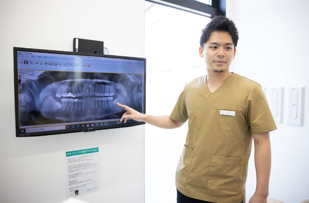
矯正治療で非常に重要になるのが、現状のお口の状態を正確に把握することです。今の歯並びや噛み合わせの状態、骨格の歪みなどを正確に把握した上で、正しい歯並び・噛み合わせに導くための治療計画を立てることが大切であり、そのためには精密検査が欠かせません。
あまファースト歯科では、セファロレントゲン（頭部X線規格写真）を用いて顔面・頭部のレントゲン写真を撮影しています。セファロレントゲンにより、顔全体の骨格や上下顎の位置関係、歯の角度、骨の大きさ・形、顔を構成する各パーツのバランスなどを正確に把握することができ、患者様一人ひとりに合わせた治療計画を立案することができます。また、セファロレントゲンは、矯正治療前と治療後を比較し治療効果を確認するうえでも役立ちます。
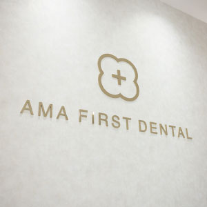
Reason 02
総合歯科医院×チーム医療
治療後のサポートを手厚く対応
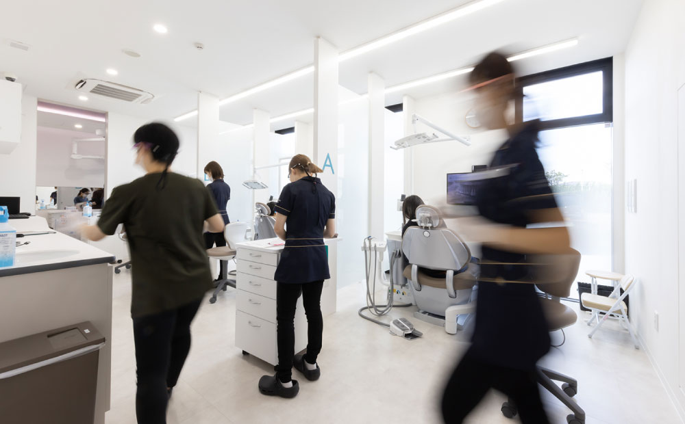
幅広い得意分野を持つスペシャリストがチームを組むことで、より確実で安全な治療を実現できるのがチーム医療のメリットです。あまファースト歯科では主治医を中心に、インビザライン矯正認定医、歯科技工士、歯科衛生士が一つのチームを組んで歯科診療にあたっています。
複数のスペシャリストがそれぞれの豊富な知識と経験をもとに、多角的な視点から患者様の口腔内を診ることでより専門的な診断や治療を実現できます。また、専門性の異なる多職種がそろっているため、矯正治療以外のあらゆるお悩み・疾患にも臨機応変に対応することが可能です。治療開始までのご相談から治療、保定期間、治療後のアフターサポートに至るまでチームで一貫して対応させていただきます。
Reason 03
患者様の状況によって
最適なプランをご提案
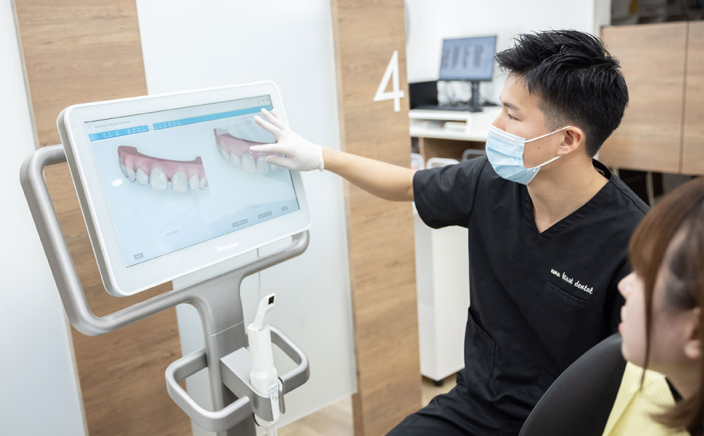
インビザラインで使用するマウスピースは初回で全てお渡し、通院は1～4ヶ月に一度程度です。矯正治療の中でも通院回数・期間が比較的短いため、忙しい方でも続けやすくなっています。あまファースト歯科では患者様のご希望やご要望、ご予算を踏まえた上で最適な治療プランをご提案しています。ご要望は遠慮なくお申し出ください。
Reason 04
日々矯正治療の症例を
ドクター同士で共有し合い研究
歯科医療は日々進化しており、新しい治療が次々と誕生しています。あまファースト歯科のドクターは、謙虚に学ぶ姿勢を忘れず自身の知識に磨きをかけるとともに、お互いの症例や研究データを共有しながら、患者様により最善の治療を提供できるよう日々努めています。
Reason 05
よりよい矯正治療を実現するため
オプションもご用意
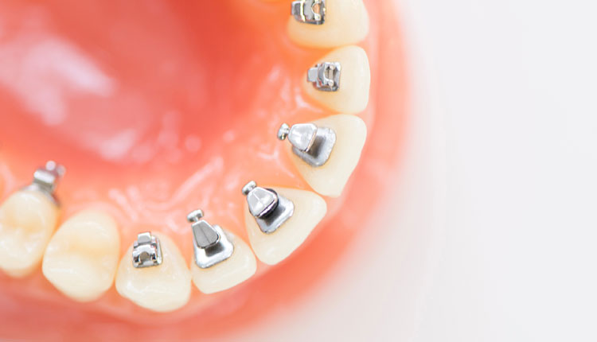
矯正治療だけを扱うのではなく、お口全体を診る包括的歯科医療にも取り組んでいます。歯並びや噛み合わせのお悩み以外にも、むし歯や歯周病、補綴歯の不具合、歯の黄ばみ・くすみなど幅広いお悩みに対応しています。また、永久歯が生え揃っていないお子様に対応する「インビザライン・ファースト」にも対応していますので、お子様の歯並びが気になる親御様もどうぞご相談ください。
Reason 06
最大24台の駐車場完備で
通いやすい立地
あまファースト歯科は、名古屋駅から約5km、大治町の旧津島街道沿いにある歯科医院です。広々とした敷地内に24台分の駐車スペースをご用意しています。十分な広さを確保していますので、駐車が苦手な方でも気兼ねなくお車で通院していただけます。院内はバリアフリー設計ですので、足が不自由な方も安心です。
インターネットからのご予約はこちら
24時間予約受付
ご相談はこちらから
お気軽にどうぞ
インビザラインの症例
あまファースト歯科はマウスピース型矯正（インビザライン）の豊富な治療実績があり、患者様の幅広いお悩みに対応できるオーダーメイドの治療をご提案しています。以下ではインビザラインの症例を一部ご紹介します。
CASE 01
マウスピース型矯正①
インビザライン・ライト
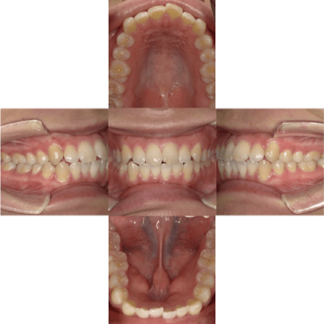
BEFORE
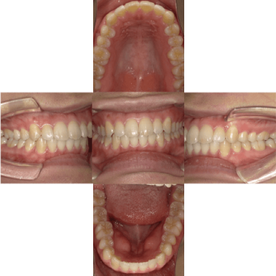
AFTER
- 年齢/性別
- 26歳/女性
- 主訴
- 歯並びをきれいにしたい
- 担当医
- 阪本
- 治療期間
- 3ヶ月
- 通院回数
- １～２ヶ月に1回調整
- 治療内容
- 歯並びを整えるために矯正歯科治療をマウスピース型矯正装置（インビザライン）にて実施。軽度の不正咬合だったため、インビザライン・ライト：計14枚を装着。
- 治療費
- ■検査・診断料：6万円
■インビザライン・ライト：35万円
総額：45万円（税込）
CASE 02
マウスピース型矯正②
インビザライン・ライト
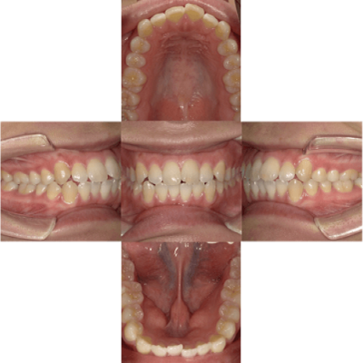
BEFORE
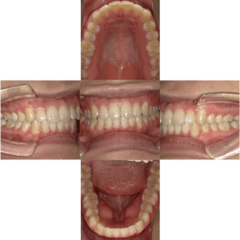
AFTER
- 年齢/性別
- 26歳/女性
- 主訴
- 歯並びをきれいにしたい
- 担当医
- 阪本
- 治療期間
- 3ヶ月
- 通院回数
- １～２ヶ月に1回調整
- 治療内容
- 歯並びを整えるために矯正歯科治療をマウスピース型矯正装置（インビザライン）にて実施。軽度の不正咬合だったため、インビザライン・ライト：計14枚を装着。
- 治療費
- ■検査・診断料：6万円
■インビザライン・ライト：35万円
総額：45万円（税込）
インターネットからのご予約はこちら
24時間予約受付
ご相談はこちらから
お気軽にどうぞ
インビザラインの価格表
矯正治療は高額なイメージがありますが、あまファースト歯科ではより多くの患者様により気軽にマウスピース型矯正（インビザライン）をお受けいただけるよう、症状に合わせた様々なプランをご用意しています。また、無理なくお支払いいただけるよう幅広い支払い方法をご提示しており自由にお選びいただけます。
無料
- 相談
- 口腔スキャン（ iTero ）
- 治療シミュレーション
+
検査・診断
50,000円
※マウスピース型矯正（インビザライン）の治療費は現金払い以外にデンタルローンの分割払いやクレジット払いもご利用いただけます。
各装置料金
※調整・保定料込み
上下すべての歯並びを整える
一般的な矯正治療
インビザライン・フル
（マウスピース15枚以上）
治療費用70万円～
軽度な不正咬合の場合に適用できる
期間・費用を抑えた矯正治療
インビザライン・ライト
（マウスピース14枚以下）
治療費用30万円～
前歯のみを整えたい方にオススメ
手軽に行える部分矯正
インビザライン・GO
（部分矯正）
治療費用30万円～
難症例に対応するため
抜歯で行う矯正治療
抜歯後の
インビザライン
治療費用30万円～
アプラスデンタルローンご利用での
お支払いシミュレーション
インビザライン ・フル費用770,000円の場合
10,700
×
84回払い
※初回は10,952円/2回目以降10,700円です。
消費税・金利・手数料などが含まれます。
インビザライン ・ライト費用385,000円の場合
5,300
×
84回払い
※初回は9,626円/2回目以降5,300円です。
消費税・金利・手数料などが含まれます。
あまファースト歯科からのご挨拶
インビザライン矯正認定医
院長竜 康弘
マウスピース型矯正（インビザライン）治療を通して一人でも多くの方に、より快適で自信の持てる毎日を過ごしていただくことが私たちの願いです。そのために「インビザライン無料相談（30分程度）」を実施し、治療のよさを知っていただきたいと考えています。ただ無料相談を受けたから必ず治療をしなければならないことはありません。治療をするかどうかは患者様のご決断です。少しでも矯正治療（インザビライン）を検討されているなら、ぜひ一度ご相談ください。
「自分は変わる。もっと良くなる。」
そんな方たちを全力で治療する
それが私たちの役目です
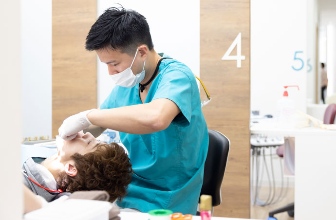
あまファースト歯科は、愛知県海部郡大治町にある歯科医院です。名古屋駅から約5kmの位置にあり車でのアクセスも良好であるため、あま市、蟹江市、名古屋市中村区、中川区近隣だけでなく遠方からも多くの方にご来院いただいています。
あまファースト歯科は数多くの矯正治療と向き合い、特にマウスピース型矯正（インビザライン）に注力して、豊富な実績と確かな知識に基づくオーダーメイドの歯科治療を提供しています。インビザライン矯正認定医が在籍し、あらゆる患者様のお悩みに専門的な見地から分析し最適な治療方法をご提案しています。
インビザライン無料相談実施中！
愛知県海部郡・名古屋市・あま市・蟹江市・津島市・弥富市で
マウスピース型矯正（インビザライン ）をお考えの方は「あまファースト歯科」にご相談ください！
- インビザラインについて知りたい
- 何歳でも受けられるのか
- 治療にかかる期間や費用を知りたい
- 自分に矯正が必要か知りたい
- 実物を見てみたい
- どのくらいの効果があるか聞きたい
など、インビザラインマウスピース矯正の
様々な不安や疑問をお聞かせください!
インターネットからのご予約はこちら
24時間予約受付
ご相談はこちらから
お気軽にどうぞ
メールでも相談を受付中
まず簡単に相談したい、忙しい・遠方なので来院回数を減らしたい、という方のために、
以下のメールフォームからも24時間ご相談・お問い合わせを受け付けております。
内容によっては、実際にお口の中を診させていただくためにご来院をお願いすることもございます。
メールフォームご利用にあたって必ずお読みください
メールフォームご利用にあたって
必ずお読みください
- 以下のメールフォームからの診察・相談の「ご予約」は受け付けておりません。
- ご予約を希望の方は、お電話またはWEB予約をご利用ください。
- 以下のメールフォームからの「ご予約の変更・キャンセル」は受け付けておりません。
- ご予約日時の変更・キャンセルは、お電話にてご連絡ください。
- お急ぎの方はお電話にてご連絡ください。（052-441-8211）
- お返事までに数日間要することがございます。何卒ご了承ください。
個人情報の取り扱いについて
あまファースト歯科（以下、｢当院｣といいます）では、個人情報がプライバシーを構成する重要な情報であることを深く認識しております。当院は、個人情報およびプライバシーにかかる事項を安全に保護し、その利用目的を明確にし、正確な情報を確保することに努めています。 すべての方に安心して当院サイトのサービスをご利用いただくために、以下の個人情報の保護方針のもと、個人情報の保護活動に取り組んでいます。
- 個人情報とは
- 個人を識別できる情報を指します。個人を識別できる情報とは、氏名、年齢、電話番号、メールアドレス、住所やお問い合わせ等の情報で、特定の個人を識別できる情報を意味するものです。
- 個人情報の保護基本方針
-
- 1．個人情報の収集、利用、提供は、適切に行います。
- 2．個人情報の不正アクセス、紛失、漏洩などの予防を行います。
- 3．個人情報に関する法令、規範、院内規定等を遵守します。
- 4．個人情報の保護のために、継続的に改善に努めます。
必要事項を全て入力し、「個人情報の取り扱いについて」をご覧いただき、同意していただけましたら下記の「確認」ボタンをクリックしてください。
内容に問題無ければ、送信完了メールが自動で届きます。
※届かない場合は、メールアドレスに誤りがないか、携帯のメール設定で迷惑メール設定が解除されているかをご確認ください。
★土曜の午後は14：00〜18：00（受付時間17：30まで）
休診日：日曜日＊長期連休の際、祝日に休診する場合あり
- 大型駐車場24台分
- 土足ＯＫのバリアフリー設計
インビザラインの
無料相談はこちら
インターネットからのご予約はこちら
24時間予約受付
ご相談はこちらから
お気軽にどうぞ